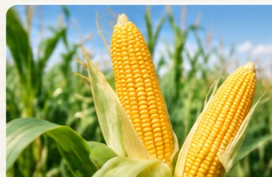
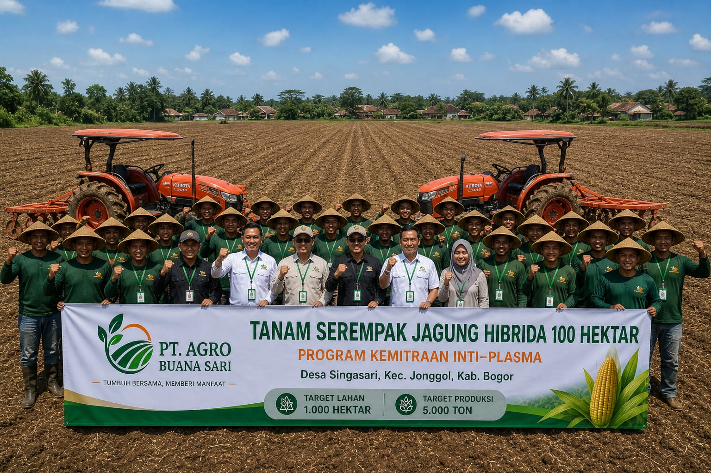
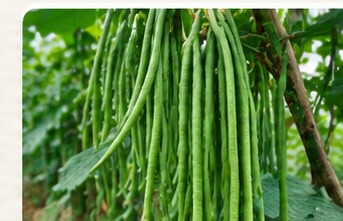
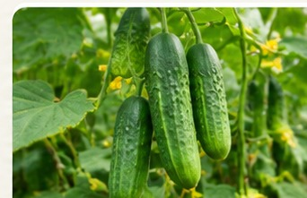

01PRODUKSI PERTANIAN
Jagung Hibrida
Pengembangan budidaya jagung hibrida dengan fokus pada produktivitas lahan dan kualitas hasil panen.

Mengembangkan potensi agribisnis Indonesia melalui pertanian jagung hibrida, kemitraan yang berkelanjutan, dan rantai pasok pangan yang kuat.
PT Agro Buana Sari hadir dengan semangat untuk ikut memperkuat sektor pertanian dan ketahanan pangan nasional.
Berbasis di Jonggol, Kabupaten Bogor, perusahaan berfokus pada pengembangan agribisnis, khususnya pertanian jagung hibrida. Melalui kolaborasi dengan petani lokal dan pengelolaan rantai pasok, kami mendorong pertanian yang produktif serta memberi nilai tambah bagi masyarakat.
Kenali pendekatan kami ↗Menghubungkan potensi pertanian dari lahan hingga rantai pasok untuk mendukung kebutuhan pangan.

01Pengembangan budidaya jagung hibrida dengan fokus pada produktivitas lahan dan kualitas hasil panen.
Pengelolaan dan pengembangan lahan pertanian secara terencana untuk mendukung kapasitas produksi.

03Membangun hubungan kolaboratif antara petani, proses produksi, dan kebutuhan pasar.

Kami mendorong pola kemitraan inti-plasma yang membuka ruang kolaborasi dengan petani lokal. Kemitraan dibangun untuk mendukung proses budidaya, meningkatkan produktivitas, dan memperkuat ekosistem pertanian.
Pertumbuhan agribisnis perlu berjalan seiring dengan pengelolaan sumber daya dan pemberdayaan masyarakat.
Agro Buana Sari berupaya membangun kegiatan usaha yang memperhatikan potensi lahan, kolaborasi masyarakat, serta keberlanjutan ekosistem pertanian.
Informasi mengenai pengembangan usaha, aktivitas pertanian, dan kemitraan PT Agro Buana Sari.
Inisiatif pengembangan lahan dengan target produksi 5.000 ton menjadi bagian dari kontribusi perusahaan dalam mendukung rantai pasok pangan.
Baca artikel referensi ↗Terbuka untuk peluang kerja sama, kemitraan petani, dan pertanyaan mengenai perusahaan.
Untuk informasi dan kerja sama, silakan hubungi tim perusahaan melalui kanal komunikasi resmi.
Kirim email ↗Alamat email di atas merupakan tautan contoh. Ganti dengan kontak resmi perusahaan sebelum dipublikasikan.